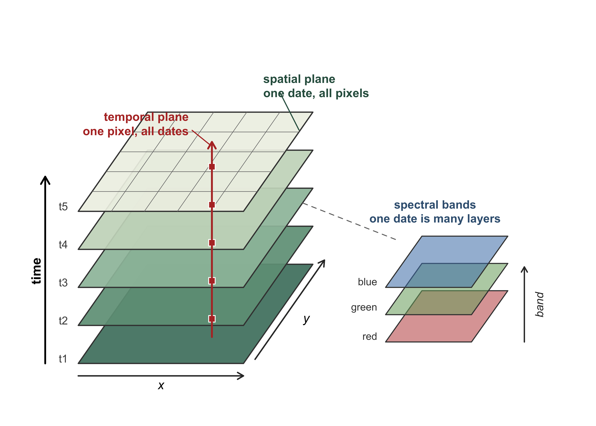
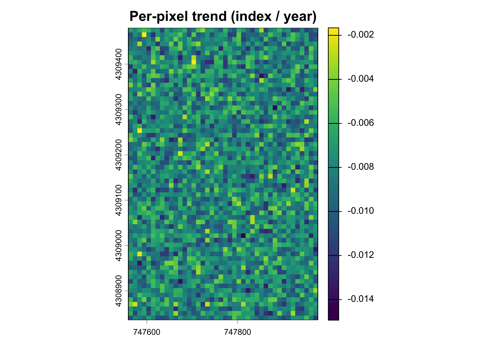
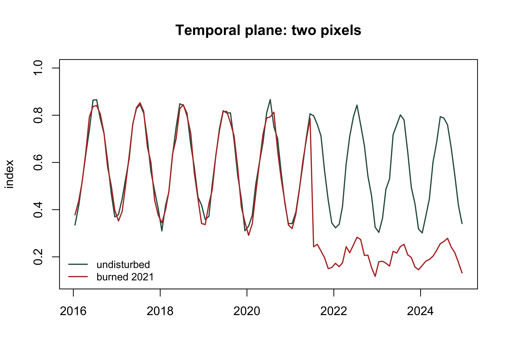
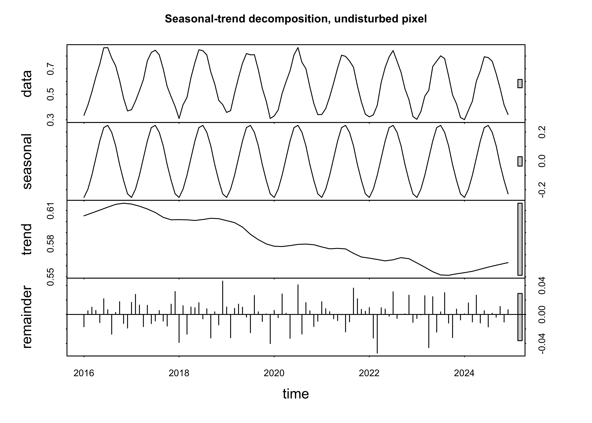
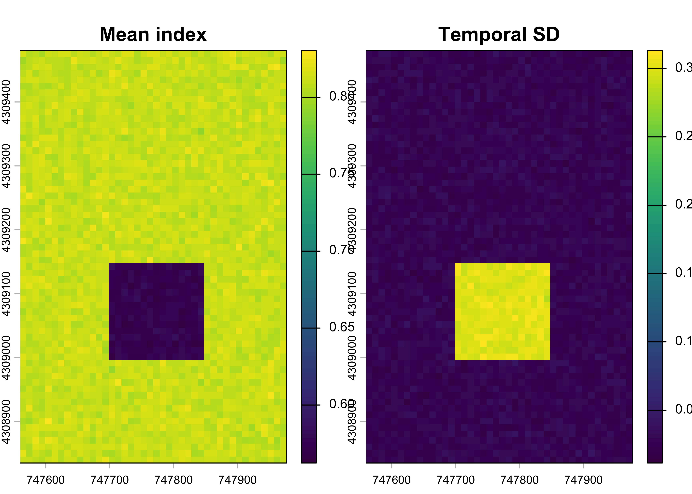
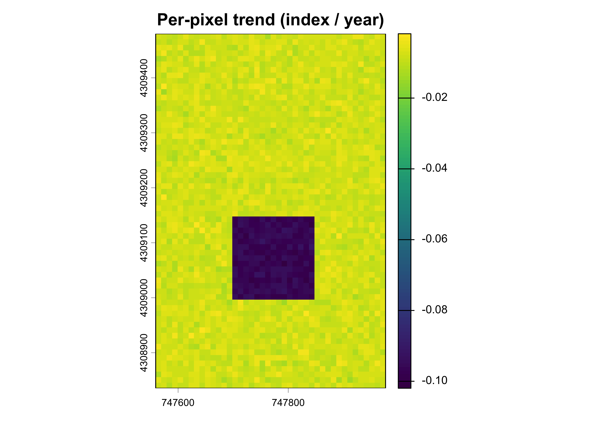

library(terra)
library(sf)
stems <- st_as_sf(read.csv("data/scbi_stems.csv"),
coords = c("lon", "lat"), crs = 4326) |>
st_transform(32617)
r <- rast(ext(vect(stems)), resolution = 10, crs = "EPSG:32617")
dates <- seq(as.Date("2016-01-15"), as.Date("2024-12-15"), by = "month")
doy <- as.numeric(format(dates, "%j"))
yfrac <- as.numeric(format(dates, "%Y")) + (doy - 1) / 365
set.seed(3)
xy <- xyFromCell(r, 1:ncell(r))
burn <- xy[, 1] > 747700 & xy[, 1] < 747850 &
xy[, 2] > 4309000 & xy[, 2] < 4309150
# simulated: trend + seasonal cycle + noise, with a 2021 fire in the burn box
mcube <- rast(lapply(seq_along(dates), function(k) {
seas <- 0.25 * sin(2 * pi * (doy[k] - 100) / 365)
v <- 0.62 - 0.008 * (yfrac[k] - 2016) + seas + rnorm(ncell(r), 0, 0.02)
if (yfrac[k] >= 2021.5) {
v[burn] <- 0.20 + 0.06 * sin(2 * pi * (doy[k] - 100) / 365) +
rnorm(sum(burn), 0, 0.02)
}
setValues(r, v)
}))
names(mcube) <- format(dates, "%Y-%m")
terra::time(mcube) <- dates
c(layers = nlyr(mcube), cells = ncell(mcube))
#> layers cells
#> 108 26888 Time Series
8.1 Data cubes
Everything so far has been a snapshot. Monitoring is about change, and change lives in time, so the capstone data structure is the space-time cube: a stack of raster layers sharing one grid, indexed by date. A pixel is no longer a single value but a time series, and the questions become temporal, is this pixel trending down, when did it drop, how fast is it recovering.
The word cube is meant literally. The data have three axes and you must hold all three in mind at once. Two are spatial, \(x\) and \(y\), the familiar grid of the earlier chapters. The third is time, \(t\), and it is the one that changes how everything must be handled, because unlike \(x\) and \(y\) it is not sampled on a regular grid unless you force it to be. A satellite revisits on a fixed cycle but returns a usable observation only when the sky is clear, so the raw time axis is ragged. Operational cubes carry a fourth axis as well, the spectral band, which is why real archives are four-dimensional arrays and why the software built for them, gdalcubes and sits in R, is organised around regularising all four at once (Appel & Pebesma, 2019; Simões et al., 2021).
We build a monthly index cube over the plot spanning nine years. It carries three things a real optical record carries: a slow downward trend, an annual seasonal swing from leaf-on to leaf-off, and observation noise. A fire clears a block in mid-2021 and holds it low.
8.2 The two planes
A cube can only be looked at one slice at a time, and there are two ways to cut it. Fix a date and you get the spatial plane: a map, every pixel at one instant, the view every earlier chapter of this book has used. Fix a pixel and you get the temporal plane: a profile, one location across every date, the view that makes change visible. Neither is complete. A map cannot tell you whether a low value is a burn scar or simply February, and a profile cannot tell you whether a decline is one pixel or the whole stand.

Cut the cube both ways on the same data. Three dates from 2019, an undisturbed year, show the spatial plane swinging with the season while the map itself barely changes:
plot(mcube[[c("2019-02", "2019-07", "2019-11")]],
range = c(0.2, 0.95),
main = c("February 2019", "July 2019", "November 2019"))
The same three maps differ by more than half an index unit, and nothing on the ground has changed. Now the temporal plane, two pixels drawn across all 108 dates, one inside the burn box and one outside it:
inside <- cellFromXY(r, cbind(747775, 4309075)) # in the 2021 burn
outside <- cellFromXY(r, cbind(747600, 4309300)) # undisturbed
p_in <- as.numeric(mcube[inside])
p_out <- as.numeric(mcube[outside])
plot(dates, p_out, type = "l", col = "#2f5d4e", lwd = 1.6,
ylim = c(0.1, 1.0), xlab = "", ylab = "index",
main = "Temporal plane: two pixels")
lines(dates, p_in, col = "#b5342e", lwd = 1.6)
legend("bottomleft", c("undisturbed", "burned 2021"),
col = c("#2f5d4e", "#b5342e"), lwd = 1.6, bty = "n", cex = 0.85)
The saw-tooth is the seasonal cycle, present in both pixels throughout. The step down in the red line during 2021 is the fire. Note how much larger the annual swing is than the trend it rides on: the disturbance is obvious because it is abrupt, but the slow decline underneath is nearly invisible against the seasonality.
8.3 Seasonality and randomness
That last observation is the central problem of the temporal plane, and it is worth quantifying rather than asserting. A time series of this shape is conventionally treated as three additive parts: a trend, the slow directional movement; a seasonal component, the oscillation that repeats each year; and a remainder, what is left when both have been removed. Seasonal-trend decomposition by loess separates them without assuming the seasonal shape is a fixed sine (Cleveland et al., 1990). Base R implements it in stl(), which needs the profile declared as a regular series with twelve observations per cycle:
s <- ts(p_out, start = c(2016, 1), frequency = 12)
dec <- stl(s, s.window = "periodic")
plot(dec, main = "Seasonal-trend decomposition, undisturbed pixel")
The three panels beneath the data are the decomposition. Partitioning the variance among them says which one governs what an analyst sees:
Seasonality accounts for almost all of the variance in the record. The trend, the thing carbon monitoring exists to measure, is a percent or two. The remainder is smaller still, and its standard deviation recovers the observation noise that was put into the simulation, which is the check that the decomposition is doing what it claims.
This is the distinction the whole chapter turns on. The seasonal component is nature’s oscillation: deterministic, repeating, and therefore removable, either by decomposition or simply by always comparing like with like. The remainder is nature’s randomness together with sensor error: irreducible, and the honest floor on how precisely any single observation can be known. Confusing the two is expensive. Seasonality mistaken for randomness inflates the error bars you report and costs credits to the uncertainty deduction. Seasonality mistaken for trend invents change that never happened.
8.4 Sampling and aliasing
The practical consequence appears the moment you reduce a monthly record to an annual one, which every monitoring programme does. If each year is represented by an observation taken at the same point in the season, the seasonal component is a constant offset and cancels out of the comparison. If the dates drift, the seasonal component leaks into the difference between years and is indistinguishable from real change. Signal processing calls this aliasing. In forest monitoring it is the reason cloud cover biases change estimates, because the dates you can see are not a random sample of the dates you wanted (Hansen et al., 2013).
Estimate the trend both ways on the same pixel. First from a consistent July observation each year, then from one observation per year taken at whatever month happened to be clear:
yrs <- 2016:2024
julys <- which(as.numeric(format(dates, "%m")) == 7)
fixed_slope <- unname(coef(lm(p_out[julys] ~ yrs))[2])
set.seed(11)
drift_slope <- replicate(2000, {
idx <- sapply(yrs, function(y) sample(which(format(dates, "%Y") == as.character(y)), 1))
coef(lm(p_out[idx] ~ yrs))[2]
})
round(c(true = -0.008,
fixed_july = fixed_slope,
drift_mean = mean(drift_slope),
drift_sd = sd(drift_slope)), 5)
#> true fixed_july drift_mean drift_sd
#> -0.00800 -0.00755 -0.00720 0.02265
round(quantile(drift_slope, c(0.025, 0.975)), 4)
#> 2.5% 97.5%
#> -0.0499 0.0365Consistent sampling recovers the true rate of decline closely. Drifting sampling recovers it on average, because the seasonal error is centred rather than systematic, but the spread around that average is several times the size of the trend being measured. The interval spans zero comfortably in both directions:
More than a third of the time, an analyst sampling this way would report a pixel as greening when it is in fact declining. Nothing is wrong with the sensor, the algorithm, or the arithmetic. The error is entirely a consequence of sampling a periodic signal at inconsistent phase, and no amount of downstream statistics recovers what the sampling design threw away.
This is where the chapter connects back to the previous one. Chapter 7 propagated uncertainty through an equation, taking the input distributions as given. Here the input distribution is itself a product of a design decision. Compositing to a fixed seasonal window before any comparison is not data cleaning, it is uncertainty reduction, and it is the cheapest available: it costs nothing but discipline and it removes a variance component that dwarfs the quantity being estimated.
8.5 Compositing to an annual cube
So we reduce the monthly cube to one layer per year, taking a consistent mid-summer window rather than an annual mean, which would average leaf-on against leaf-off and discard the contrast that makes disturbance visible. This is the temporal normalisation step that operational cube software performs with cloud-ranked compositing:
8.6 Temporal reduction
A cube is reduced along time the way a single raster is summarised along space. app() applies a function to each pixel’s time series. The mean over years is the baseline surface; the standard deviation flags where the record is unstable:
mean_ndvi <- app(cube, mean)
sd_ndvi <- app(cube, sd)
plot(c(mean_ndvi, sd_ndvi), main = c("Mean index", "Temporal SD"))
High temporal SD is the signature of disturbance: stable forest barely varies year to year once the season is controlled, so the burned block lights up.
8.7 Trends
The direction and rate of change per pixel is the slope of index against year, a linear trend fitted independently at every location. app() carries the regression across the cube:
slope <- app(cube, function(v) {
if (all(is.na(v))) return(NA)
coef(lm(v ~ years))[2]
})
names(slope) <- "trend_per_year"
plot(slope, main = "Per-pixel trend (index / year)")
Strong negative slopes mark sustained loss. This is the engine of trend-based monitoring: a whole landscape of time series reduced to one map of who is gaining and who is losing.
8.8 Detecting the event
A trend says a pixel declined; monitoring needs to know when. Differencing consecutive years isolates the step. The fire year is the layer where the largest drop occurs, and thresholding the year-on-year change delineates the burned area:
8.9 Keystone: IPCC Tier 1 fire emissions
The capstone joins the whole book: a time series detects a fire, the burned area is measured, and IPCC Tier 1 methods turn that area into an emission. The IPCC-wildfire-emissions workflow runs this chain from burn-area mapping through to emission factors, and the governing equation is the same one every fire inventory uses (IPCC, 2006):
\[L_{fire} = A \times M_B \times C_f \times G_{ef} \times 10^{-3}\]
where \(A\) is burned area, \(M_B\) the fuel biomass available, \(C_f\) the combustion factor, and \(G_{ef}\) the emission factor for the gas. With the burned area from the cube and IPCC default factors for temperate forest:
A <- burned_ha # ha, from the time-series detection
MB <- 120 # tonnes dry matter per ha (fuel load)
Cf <- 0.45 # combustion factor (fraction consumed)
Gef <- 1569 # g CO2 per kg dry matter (IPCC default)
CO2_tonnes <- A * MB * Cf * Gef * 1e-3
round(c(burned_ha = A, CO2_tonnes = CO2_tonnes), 1)
#> burned_ha CO2_tonnes
#> 2.3 190.8That single number, tonnes of CO2 from the fire, is the end of the pipeline this course has built toward: geospatial data, cleaned and projected in the early chapters, turned into a detected, measured, and quantified emission with every step reproducible. In a real inventory each factor carries its own uncertainty, so the honest final move is to wrap this equation in the Monte Carlo of the previous chapter and report the emission with a confidence interval. The methods are all now in hand.
Note what that interval does and does not include. It propagates the uncertainty in the three emission factors while treating the burned area \(A\) as known exactly, which it is not: it came from a threshold applied to a differenced cube, and both the threshold and the dates feeding it are choices. The area-adjusted accuracy of Chapter 7 is how that term is estimated properly, and a complete Tier 2 statement would carry it into this same simulation alongside the factors.
8.10 Exercises
- Reduce the cube with
app()to the maximum index per pixel instead of the mean. Where does the maximum surface differ most from the mean, and why there? - Fit the per-pixel trend on the pre-fire years only (2016–2020). How does the burned block’s slope compare with the full-record slope, and what does that say about mixing a step change into a linear trend?
- Recompute burned area with a −0.2 threshold on the 2021 difference. How does the emission estimate move, and which term in the IPCC equation is it multiplying?
- Run
stl()on the burned pixelp_inrather than the undisturbed one. Which component absorbs the 2021 step, and what does that tell you about applying seasonal decomposition across a disturbance? - Rebuild the annual cube using an annual mean over all twelve months instead of a summer median. How do the temporal SD map and the detected burned area change, and why does averaging across the season blur the event?
- Repeat the drifting-date experiment restricting the sampled months to June through September, as a cloud-screened archive in a seasonal climate might allow. How much of the variance inflation survives, and what does that imply about how tight a compositing window needs to be?
- (Applied.) Using the Monte Carlo output, report the median CO2 and its 95% interval, then state which of the three factors (fuel load, combustion factor, emission factor) you would most want to measure locally to narrow the interval.